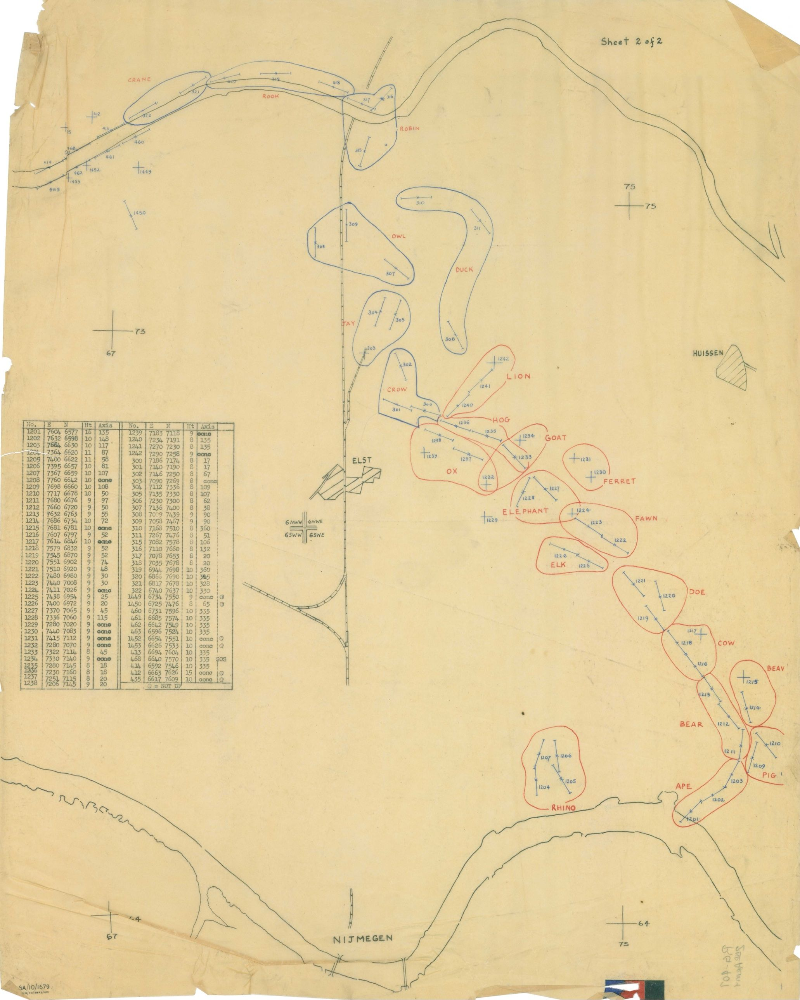
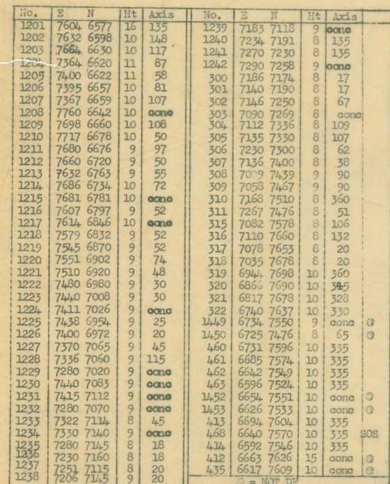
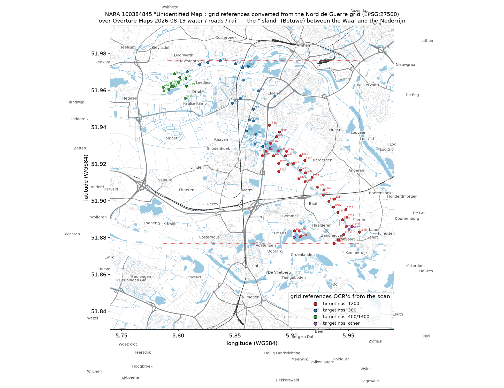
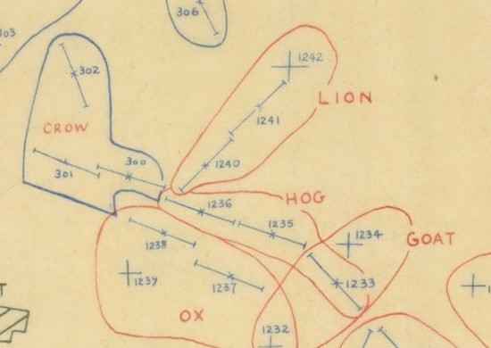
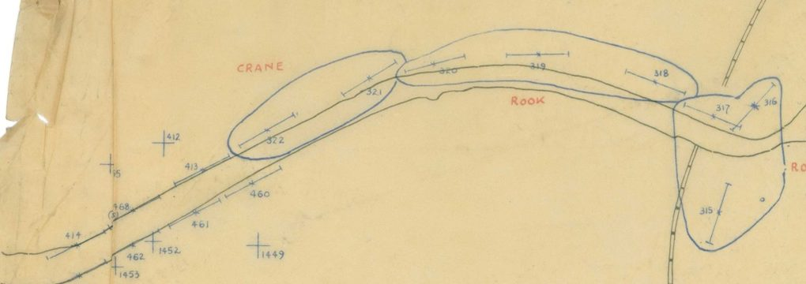
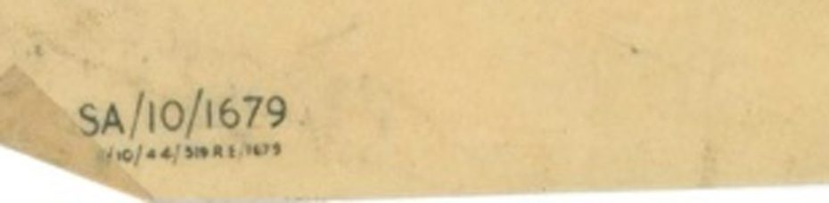
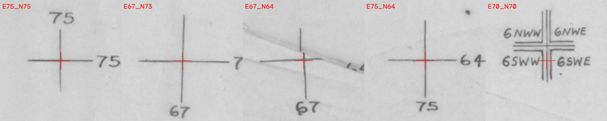
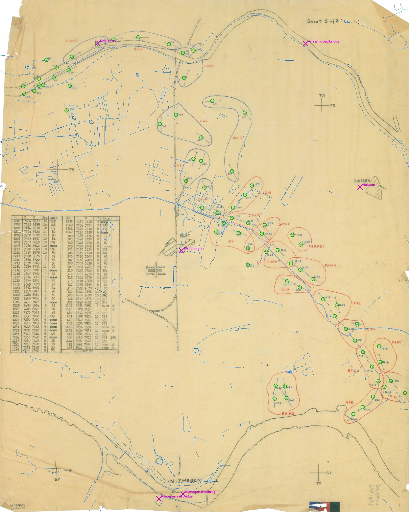

The US National Archives catalogues this sheet as "Unidentified Map". It is a British artillery overlay of the Nijmegen bridgehead, printed in October 1944, and it identifies itself: every place it depicts is written on it as a number.

The sheet is tracing paper. On it are two rivers, a railway, a road junction, three place names, a typed table, and twenty-two shapes outlined in red and blue pencil, each labelled with an animal and each containing crosses with numbers beside them. Top right it says "Sheet 2 of 2". Bottom left is a serial, SA/10/1679. There is no title, no scale bar, no north arrow, no legend beyond one line at the foot of the table. It was drawn to be laid over a printed map that is not here.
The place names are the first anchor: NIJMEGEN beside the southern river, ELST at the road junction on the railway, HUISSEN off to the right. Those three towns sit within twelve kilometres of one another in Gelderland, in the Netherlands, on the strip of polder the Allies called "the Island": the Betuwe, between the Waal to the south and the Nederrijn to the north. The southern river on the sheet must be the Waal, the northern the Nederrijn, and the railway the Nijmegen–Arnhem line. That is a hypothesis. The table proves it.
The table lists seventy-four entries under the headings No. · E · N · Ht · Axis. E and N are four-figure eastings and northings, the form a British gunner used in 1944 to give a position to ten metres: 7604 6577 means 76.04 km east and 65.77 km north of the corner of a 100-kilometre grid square. The grid is the Nord de Guerre Zone, the Allied grid for the Low Countries, a Lambert projection that survives today as EPSG code 27500, so a modern coordinate can be turned into a 1944 grid reference and back.

A four-figure reference leaves off which 100-km square it is in. Only one square puts the three named towns in the right places relative to the seventy-four numbers. In it, the modern coordinates of the landmarks come out as:
| Landmark | 1944 grid (E N) | On the sheet |
|---|---|---|
| Nijmegen, Waal road bridge | 7087 6329 | just north-east of the grid cross labelled 67 / 64 |
| Elst, church | 7077 7059 | the ELST block; targets 300 and 1238 a kilometre to its east |
| Huissen, centre | 7619 7257 | the HUISSEN block; target 1242 (LION) three kilometres west |
| Driel | 6736 7446 | target 1450, 300 m north |
| Arnhem, road bridge | 7450 7684 | where the Nederrijn on the sheet turns north |
Everything fits. The grid crosses drawn on the sheet, labelled 64, 67, 73 and 75, are the kilometre lines of that square. The four cramped labels at the double cross in the middle, 6NW W · 6NW E · 6SW W · 6SW E, name the printed map the overlay belongs on: the East and West halves of sheets 6 NW (Arnhem) and 6 SW (Nijmegen) of GSGS 4427, the British 1:25,000 series of Holland, which meet at exactly that corner, grid 70 / 70. And the heights agree with the ground: the Betuwe polder lies eight to ten metres above Dutch datum, the sheet gives 8, 9 and 10 for target after target, and the two targets whose heights are wrong are the two that lie across the river on the Westerbouwing bluff, which rises to fifty metres.
Put on a modern map, the seventy-four points are not scattered across the Island. They form three chains, and the chains have a shape that anyone who knows the autumn of 1944 will recognise.

After Operation Market Garden failed to hold Arnhem, the Allies were left with the southern half of the Island: Nijmegen and its bridges, Elst, and the polder west to Opheusden. The Germans held the ground east of Bemmel, the approaches to the Arnhem bridge at Elden, and the whole north bank of the Nederrijn. The red chain traces the eastern edge of the Allied position; the blue chain traces its northern edge along the river. Every target lies on the German side. This is a map of where the enemy was, drawn by the side facing him.
The line at the foot of the table settles what kind of map it is: "⊗ = NOT DF". DF is defensive fire. When a position is likely to be attacked, its supporting guns register targets in advance, along the approaches the attack would use, so that an infantry company under assault can call down fire by number in seconds. The numbered crosses are those targets. A bar through a cross, with ticks at its ends, marks a linear target, a line of shells rather than a point; the bearing of that line is the "Axis" column. The entries marked "conc" are concentrations, fire on a point. The few circled targets are on the list but are not defensive-fire tasks.


The animal names are the target areas a battery would be told to cover, and they are not chosen at random. Every red area is a mammal: RHINO, APE, PIG, BEAR, BEAVER, COW, DOE, ELK, FAWN, ELEPHANT, FERRET, OX, GOAT, HOG, LION. Every blue area is a bird: CROW, JAY, OWL, DUCK, ROBIN, ROOK, CRANE. Two naming schemes, two number series, two colours: two formations' worth of defensive fire on one sheet.
Those two formations can be named from the ground they cover. In October 1944 the eastern Island, from the Waal dyke at Haalderen up through Baal and Bergerden to Elst, was the sector of the 50th (Northumbrian) Division, which attacked toward Baal and Haalderen on 3 October and then held the line, with the US 508th Parachute Infantry attached from the 6th. That is the red block. The northern edge, from Elst past Elden and along the river to Driel and Heteren, was held by the 43rd (Wessex) Division until 3–5 October, when it handed over to the US 101st Airborne Division, which fought there under British corps command with British guns in support. That is the blue block.
The sheet is filed at the National Archives in College Park in a folder of the Adjutant General's Office's World War II records labelled "2nd Army Folder 19 – Overlays". The US Second Army spent the war training troops in Tennessee. The folder's other contents are Royal Artillery fire plans for the 3rd British and 51st Highland Divisions, a 12 Corps reference-point trace, and route-intelligence overlays for the Rhine, Weser, Elbe and Kiel Canal: this is the British Second Army, and the folder is a bundle of its artillery traces that ended up in American hands.

The serial says the same thing in the sheet's own hand. SA/10/1679 is Second Army's number for the trace; the line beneath it is the printer's: reproduced in October 1944 by 519 Field Survey Company, Royal Engineers, one of the two survey companies that landed with Second Army in June and did its artillery survey and map printing all the way to Germany. Print number 1679.
October 1944 is the only month it could be. The Island became a British responsibility on 28 September, when the 101st Airborne came under British XII Corps there. On 9 November the whole Nijmegen salient passed to First Canadian Army. On 2 December the Germans blew the Nederrijn dyke at Elden and flooded the eastern Island, putting every red target under water. A Second Army trace of these two sectors, printed in October, sits inside the six weeks in which the ground it shows was the front.
A tracing-paper overlay has no coastline to fit to a modern map, but it has five grid crosses, drawn so the sheet could be aligned on the printed map beneath it, each labelled with its kilometre value. Those five crosses fix the sheet in the 1944 grid; the grid's definition fixes it on the earth. The fit is good to seventeen metres, three pixels on this copy, which is about the width of the pencil lines.

Drag the slider. The right side shows what the fitted sheet claims: every one of the seventy-four table coordinates projected back onto the paper as a green circle, today's rivers in thin blue, and the present positions of the Elst church, Huissen, the two Nijmegen bridges, the Arnhem bridge and the Driel ferry in magenta.

the sheetthe sheet, georeferencedIt cannot tell us which day in October it was printed, or which regiments' guns were laid on RHINO and CRANE; that is in the divisional artillery war diaries (WO 171) at Kew. It cannot tell us what was on Sheet 1 of 2, which would carry the title block; that sheet is not among the folder's scanned items. And the first character of the printer's line is not legible on the copy used here, though it should be on the National Archives' full-resolution scan.
Everything else on this page can be checked. The catalogue record, the seventy-four coordinates in modern latitude and longitude, the georeferenced GeoTIFF, the figures and the code that produces them are at github.com/fossettlab/island-trace.
{kind=link}